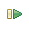
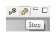

Performance Monitoring Using the System Debugger
The Performance Monitoring feature in SDK collects AXI Performance Monitor (APM) Event Count Module data from the PL, and ARM Performance Monitor Unit (PMU) data from a Zynq® Processing System.
Note:
The Performance Monitoring feature is in Beta release for 2014.1.
The data is collected in SDK in real-time. The values from these counters are sampled every 10 milliseconds. These values are used to calculate metrics shown in the
Performance Counters
view.
SDK monitors the following PMU events for each Cortex-A9 CPU:
-
Data cache refill
-
Data cache access
-
Data stall
-
Write stall
-
Instruction rename
-
Branch miss
The following two Level-2 cache controller (L2C-PL330) counters are monitored:
-
Number of cache hits
-
Number of cache accesses
The following APM counters for each HP and ACP port are monitored:
-
Write Byte Count
-
Read Byte Count
-
Write Transaction Count
-
Total Write Latency
-
Read Transaction Count
-
Total Read Latency
Using the Performance Monitoring Feature
-
Create a hardware design with only one AXI Performance Monitor using the Vivado® Design Suite and export the design to SDK.
APM slots from 0 to 5 should be connected to HP0, HP1, HP2, HP3, HP4 and ACP ports in that order.
-
Create an application and BSP project for the exported hardware design.
-
Program the FPGA with the bitstream of the hardware project using the Program FPGA dialog box (
Xilinx Tools > Program FPGA
).
-
Select the application project and select
Run > Debug Configurations.
-
Double-click
Xilinx C/C++ application(System Debugger)
to create a new configuration.
Notice all the default values are populated in the Debug Configuration for the selected application project. The selected project is also selected for download in the Applications tab.
-
Click
Debug.
The application is downloaded to the target board and stopped at the main.
-
Click the
Resume
button.

The application resumes. Traffic is generated on the HP and ACP ports.
-
Select
Window > Show View > Others
to open the Performance Counters view.
-
Select any of the APU contexts in the Debug View and click the
Start
button in the Performance Counters view.
-
Notice that the Performance Counters view is updated in real-time for every two seconds with counter values coming from AXI Performance Monitor (APM) and Zynq Performance Monitor (ZPM) on processing system.
-
You can stop the data collection by clicking the
Stop
button at the top right corner of the view. The data collection will also be stopped when System Debugger is disconnected.

Once the data collection stops, the raw data of counters will be stored in the workspace directory as CSV file. You can find the path of the CSV file in the SDK log.
Limitations
-
Performance monitoring feature is available only while debugging an application using the System Debugger in Standalone Application mode.
-
The hardware design should have one and only one AXI Performance Unit, and its slots from 0 to 5 should be connected in HP0, HP1, HP2, HP3, HP4 and ACP ports in that order.
Copyright © 1995-2014 Xilinx, Inc. All rights reserved.